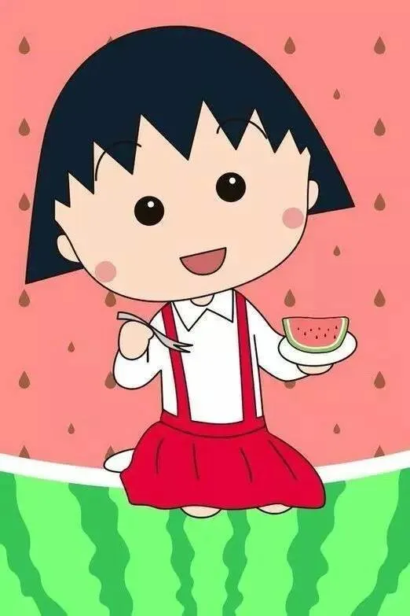
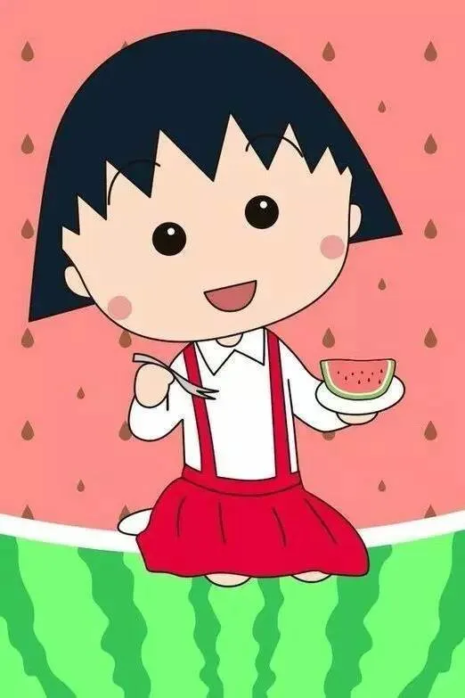

🎈 经典怀旧类动漫
《哆啦A梦》（ドラえもん）
藤子·F·不二雄创作的经典童年动漫，讲述了来自22世纪的哆啦A梦，帮助大雄解决各种困难的故事。充满童趣与想象力，传递了友情、勇气和温暖，是几代人的童年回忆。
《樱桃小丸子》（ちびまる子ちゃん）
以作者樱桃子的童年为原型，讲述了小丸子和家人、同学的日常故事。剧情真实又搞笑，充满生活气息，展现了平凡生活中的小美好，是怀旧动漫的代表。
藤子·F·不二雄创作的经典童年动漫，讲述了来自22世纪的哆啦A梦，帮助大雄解决各种困难的故事。充满童趣与想象力，传递了友情、勇气和温暖，是几代人的童年回忆。
以作者樱桃子的童年为原型，讲述了小丸子和家人、同学的日常故事。剧情真实又搞笑，充满生活气息，展现了平凡生活中的小美好，是怀旧动漫的代表。